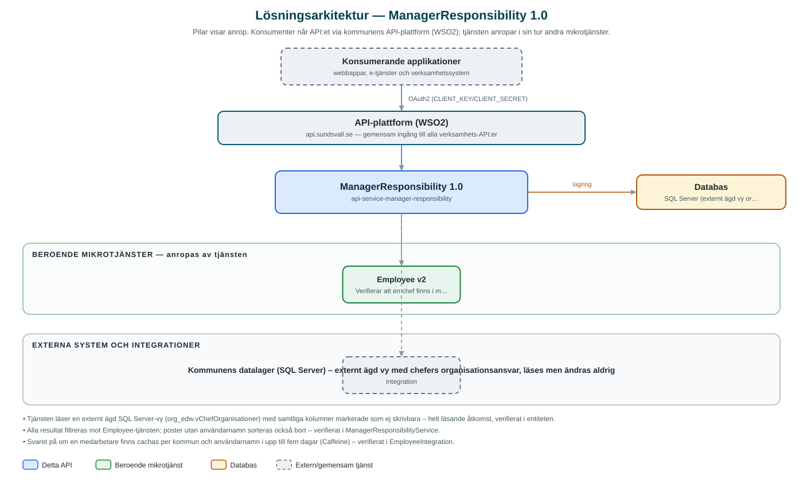

ManagerResponsibility
Läsande API som svarar på vilka organisationer en chef ansvarar för – och vem som är chef för en viss organisation.
Om API:et
ManagerResponsibility ger kommunens applikationer ett enhetligt sätt att slå upp chefers organisatoriska ansvar. API:et kan besvara frågan från två håll: vilka organisationer en viss person (chef) ansvarar för, och vilka chefer som ansvarar för en viss organisation. Uppslag kan göras på person-id, användarnamn eller organisations-id.
Tjänsten är helt läsande. Uppgifterna hämtas ur en externt ägd databasvy i kommunens datalager (SQL Server) som tjänsten aldrig ändrar i. Varje träff kontrolleras dessutom mot kommunens Employee-tjänst, så att bara chefer som faktiskt finns i medarbetarregistret returneras.
API:et används av applikationer som behöver veta chefsansvar, exempelvis för attestflöden, behörighetsstyrning och organisationsvyer.
Det här gör API:et
- Chefsansvar per person – Listar vilka organisationer en chef ansvarar för, uppslaget på person-id (UUID).
- Chefsansvar per användarnamn – Samma uppslag men på chefens inloggningsnamn.
- Chef per organisation – Listar vilka chefer som ansvarar för en viss organisation, uppslaget på organisations-id.
- Filtrering mot medarbetarregistret – Alla svar filtreras mot Employee-tjänsten så att endast befintliga medarbetare returneras.
- Cachade kontroller – Kontrollen av att en medarbetare finns cachas för att avlasta Employee-tjänsten.
API-dokumentation
API:ets samtliga resurser, parametrar och datamodeller finns beskrivna i en OpenAPI-specifikation som är hämtad ur källkodsförrådet. Den kan utforskas interaktivt i Swagger UI eller laddas ner som YAML. Programvaruförteckningen (SBOM) listar tjänstens samtliga tredjepartskomponenter med version och licens.
Teknisk dokumentation
Nedan beskrivs hur tjänsten är uppbyggd, vilka andra tjänster den anropar och vad som krävs för att driftsätta den. Informationen är härledd ur källkoden och dess konfiguration på GitHub.
Arkitektur

API:et är en mikrotjänst (Java 25, Spring Boot via kommunens gemensamma tjänsteplattform dept44 (8.0.8), byggd med Maven). Konsumenter når tjänsten via kommunens gemensamma API-plattform (WSO2) på api.sundsvall.se – tjänsten anropas aldrig direkt. Tjänsten anropar i sin tur andra mikrotjänster i kommunens tjänstelandskap. Lagring: SQL Server (externt ägd vy org_edw.vChefOrganisationer i datalagret); tjänsten läser enbart och har inga egna migrationer. Övriga integrationer som förekommer i koden: Kommunens datalager (SQL Server) – externt ägd vy med chefers organisationsansvar, läses men ändras aldrig.
Teknikstack
- Språk: Java 25
- Ramverk: Spring Boot via kommunens gemensamma tjänsteplattform dept44 (8.0.8), byggd med Maven
- Databas: SQL Server (externt ägd vy org_edw.vChefOrganisationer i datalagret); tjänsten läser enbart och har inga egna migrationer
- Övrigt: Caffeine-cache för medarbetarkontroller, Resilience4j-circuit breaker mot Employee
Beroenden till andra mikrotjänster
Tjänsten anropar följande mikrotjänster. Versionerna är hämtade ur källkodens integrationsklienter.
| Tjänst | Version | Användning |
|---|---|---|
| Employee | v2 | Verifierar att en chef finns i medarbetarregistret innan resultat returneras. |
Programvaruförteckning
Tjänsten bygger på 251 tredjepartskomponenter fördelade på 12 olika licenser. Till skillnad från tabellen ovan, som listar andra mikrotjänster, avses här de programbibliotek som ingår i bygget. Se programvaruförteckningen för hela listan.
Konfiguration och driftsättning
- application.yml med URL och OAuth2-klientuppgifter för Employee-tjänsten
- JDBC-anslutning till datalagrets SQL Server; Hibernate validerar schemat men skapar inget (ddl-auto: none)
- Caffeine-cachen för medarbetarkontroller är konfigurerad till 5 dagars livslängd och max 3000 poster
- Anrop görs per kommun – municipalityId ingår i alla API-vägar
Noterbart ur källkoden
- Tjänsten läser en externt ägd SQL Server-vy (org_edw.vChefOrganisationer) med samtliga kolumner markerade som ej skrivbara – helt läsande åtkomst, verifierat i entiteten.
- Alla resultat filtreras mot Employee-tjänsten; poster utan användarnamn sorteras också bort – verifierat i ManagerResponsibilityService.
- Svaret på om en medarbetare finns cachas per kommun och användarnamn i upp till fem dagar (Caffeine) – verifierat i EmployeeIntegration.
- Organisations-id kan matchas partiellt i en pipe-avgränsad lista av organisationer i vyn – verifierat i repositoryts frågor.
Källkod
Källkoden är öppen och finns hos Sundsvalls kommun på GitHub. I källkodsförrådet finns även instruktioner för att klona, konfigurera och starta tjänsten i egen miljö.